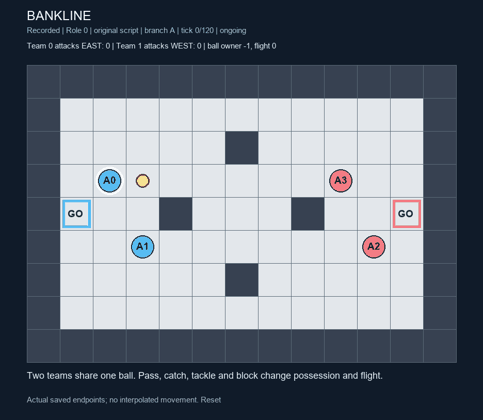
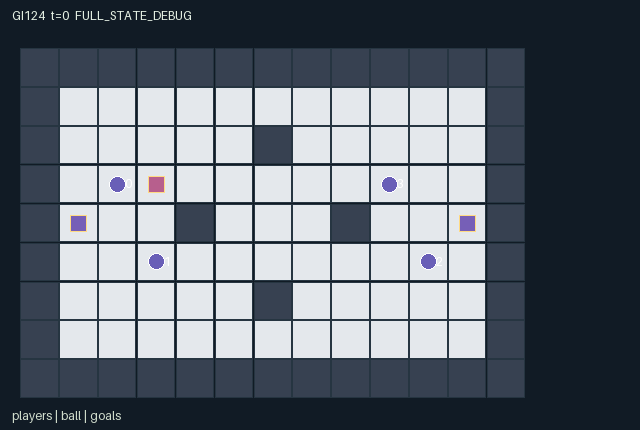

GI124 / SPATIAL
反弹控球场
四人分队传球、射门、格挡与抢断；球撞墙反弹，真实接触和冷却影响争夺。
Original saved demonstration
Recorded native state, often authored scripts or interventions; information scope and failures are preserved in the original provenance. This is a saved demonstration, not live browser play.

Release verification episode
Untrained uniform legal actions. Actual JAX state sampled along the full original episode; full-state debug camera. No human performance or learning claim.

Run this game
crucibles play --game 124
Start Python locally, then open the address printed by the terminal. Installation, multiplayer, takeover and keyboard controls →
Objective, rewards & ending
Exact task contract
{
"objective": "With a teammate, pass, shoot, block and intercept a shared ball to score three goals before the opponent.",
"natural_termination": "Any team score reaches three. Natural completion takes precedence over H=120. Nonterminal scores reset only ball state, without resetting players or the raw episode.",
"interaction": "A teammate changes passing direction, receiving opportunities and possession. Opponent tackles, ready blocks and occupied cells change feasible trajectories. A common ball and zero-sum team reward prevent independent collection-race behavior.",
"observation_access": "All strategically relevant physical state, teams, cooldowns, goals, map, ball possession/velocity/flight, score and displayed event flags are public. Own identity is explicit. last_holder is attribution bookkeeping without transition-dependent use."
}Declared per-step reward bounds: -1 to 1. Observability: fully_observable.
Rules
- Players 0/1 are team 0, attacking east. Players 2/3 are team 1, attacking west.
- Movement is simultaneous; occupied old cells and contested targets block entry, including swaps.
- Ready claim/tackle reaches Manhattan distance one. A ready blocking possessor is shielded.
- A pass aims by the signs of teammate displacement; shots choose a cardinal direction. Released flight has six ticks.
- Wall and obstacle collisions reflect the blocked velocity axes; corner collisions reflect both.
- A ready block within one cell of the post-wall ball reflects it and restores its pre-flight coordinate for that step.
- Exact body contact catches a loose ball; a ready claim extends catching to distance one. A releasing player cannot immediately recatch that step.
- Contact contests use rotating priority (player index minus t) modulo four. A ready block is resolved before catching.
- Successful specials create a two-tick cooldown. Movement and passive contact catches remain available.
- A loose ball in the east/west mouth y=3..5 scores for team 0/1 respectively; contacts resolve before goals.
- A score resets only the ball to center. First team to three ends the game; horizon 120.
Original mechanism document (historical status wording retained)
# Bankline — four-player ricochet possession arena Status: AUTHORED_NOT_EXECUTED. This initial train-only source was written for game-v3-00124, ordinal 124, attempt 00. No candidate import, compilation, transition, rollout, JIT, vmap, numerical parity check, rendering, training or test-set use occurred. Source SHA256: be2e366123e40eb86d3b71476fa3807775d75ba255178d0e118891d2634041c9. ## Boundary and lifecycle A=4, O=169, U=12, H=120. All state leaves have a fixed declared key, shape and int32/bool dtype; observations and rewards are float32. Reset consumes only its supplied key; no external state, time, cache, file or network is part of the kernel. The scalar t starts at zero. A nonterminal call advances it once. Natural termination takes precedence over the horizon. An already-terminal call preserves every leaf and observation, preserves its terminal cause and clock, and returns zero rewards and all dones true. There is no raw auto-reset. The final tree operation preserves each reset leaf's dtype explicitly. Every in-range action is a legal command attempt while the episode is live. A blocked movement, absent resource, wrong recipe, unavailable object or cooldown causes the specified deterministic wait/no-effect outcome. Out-of-range integers map to action 0. At joint termination only action 0 is legal. No role is removed independently; completed contributors can still help until joint completion. The role adapter must preserve these masks and semantics. - reset: candidate.py:18 - observe: candidate.py:48 - legal_actions: candidate.py:45 - raw_step: candidate.py:67 ## Actual mechanism and timing The 13 by 9 arena uses interior x=1..11, y=1..7. Boundary walls and four interior obstacles constrain all player and ball movement. The western and eastern goal mouths are x=1 and x=11 with y=3..5; their scene centers are (1,4), (11,4). Teams are fixed to players [0,1] and [2,3]. The shared ball begins loose at (3,3), and every player has one scalar action per simultaneous transition. Geometry is at candidate.py:21 and movement is at candidate.py:74. Cardinal movement resolves first. A target occupied by another player's old coordinate cannot be entered even when that player moves away; all multiple-target contests are blocked. This simple no-swap rule makes body blocking a real opportunity constraint without hidden randomized arbitration. All special commands are attempts, and cooldown does not disable ordinary movement. A carried ball follows the possessor's actual post-movement position. Ready opponents using claim/tackle within Manhattan distance one may take it unless the possessor is using a ready shield. Contests select the smallest (player index minus t) modulo four. This rotating priority also resolves blockers and catchers and is fully determined by the public clock. A new tackler cannot release in the same transition. See candidate.py:80, candidate.py:88, candidate.py:90 and candidate.py:99. A ready possessor's pass sets velocity to the component-wise sign of the current teammate displacement. This allows diagonal flight but does not predict future receiver motion. A shot uses one of four cardinal unit vectors. Both start a six-tick flight timer and release possession. The first flight update occurs immediately. After every update the timer decreases, and reaching zero stops the ball. There is no teleportation to a teammate or a goal; see candidate.py:102, candidate.py:103, candidate.py:101 and candidate.py:112. A flight step checks its x-only, y-only and full target cells against actual obstacles. Blocked axes reverse. A diagonal-only corner obstruction reverses both axes; if even the reflected target is blocked, the ball stays and its velocity becomes zero. A ready blocking player within distance one of the post-wall target has priority over catches: that block returns the ball to its pre-flight coordinate for this step and reverses the new velocity. This is a discrete defensive contact rule, not continuous rigid-body physics. All branches are written at candidate.py:113, candidate.py:118, candidate.py:119, candidate.py:127 and candidate.py:130. An unblocked loose ball is caught on exact body contact, or within distance one by a ready claim command. A just-releasing player is excluded for that transition. Passive exact-contact catches do not need a special action; deliberate extended catches do. The latter, releases, tackles and blocks all set cooldown to two. A catch by the opposite last-touch team or a successful tackle sets the interception event. A teammate's readiness and chosen movement therefore change whether a pass is received, lost or carried into a ricochet. See candidate.py:135, candidate.py:139 and candidate.py:157. Contacts resolve before scoring. A loose ball in the eastern mouth scores for team 0, and one in the western mouth for team 1, regardless of who last touched it; own goals therefore count against that side. One goal pays +1 to both scoring teammates and -1 to both opponents. No auxiliary pass/catch reward creates a score-farming incentive. On a nonterminal goal only ball position, velocity, possession, timer and touch attribution reset to the arena center. Player positions and cooldowns continue. Reaching score three ends naturally. See candidate.py:147, candidate.py:150 and candidate.py:168. Candidate strategies include direct carrying plus a coordinated finish, a receiver drawing away a defender before a pass, ricochet shots around obstacles, and alternating a shielded carrier with a ready receiver. A defender must choose between movement, extended tackling and a one-step block; cooldown creates a temporal window for opponents. These are strategy hypotheses, not a solved game or a richness measurement. Proposed variations in obstacles, flight duration or cooldown would change interception timing, but no sampled-rule transfer or meta-learning result is claimed. The scene binds actual ball position, velocity, owner and timer, all player locations/team/cooldown/block state, and both goal coordinates/scores. The generic goal glyph denotes the center of the three-cell mouth; the rule text declares its extent. Pass, catch, interception, bounce and score flags correspond to source transitions and are not inferred from visual motion. ## Observation contract - Columns 0 through 7 (public): All four player xy coordinates divided by 12 - Columns 8 through 15 (public): Team identity for each player, two-way one-hot - Columns 16 through 19 (public): Player special-action cooldowns /2 - Columns 20 through 23 (public): Active blocking/shield flags for the last transition - Columns 24 through 25 (public): Ball xy /12 - Columns 26 through 27 (public): Ball integer velocity components in -1..1 - Columns 28 through 32 (public): Ball owner one-hot: loose, player 0, 1, 2, 3 - Columns 33 through 33 (public): Remaining flight timer /6 - Columns 34 through 36 (public): Last ball-touch team one-hot: none, team 0, team 1 - Columns 37 through 38 (public): Team scores /3 - Columns 39 through 42 (public): Western and eastern goal center xy /12 - Columns 43 through 159 (public): Public 9 by 13 arena map in yx order - Columns 160 through 163 (self): Own player identity one-hot - Columns 164 through 164 (public): Clock /120 - Columns 165 through 168 (public): Latest pass-release, catch, interception/tackle and bounce flags The returned observation is the policy information boundary. Entity visibility and declared attributes refer to the same actual state and access rules. The complete static tile layout is public; a debug/full-state display must be labelled separately from a role view. Undeclared internal leaves are not an invitation to expose private values in a role renderer. ## Fixed author scripts and paired interventions playthrough.json contains fixed joint integer commands, an explicit seed and UNEXECUTED_AUTHOR_HYPOTHESIS status for each script. Stop at the first done. These scripts were constructed from the written rules without local execution, simulation, numerical action search or feedback from other candidates. Prefix/branch comparisons state predicted causal differences only; there is no observed trace, successful episode, solvability certificate, ranking or learned policy. ## Community provenance and delivery boundary Only this batch's hash-verified design/request, 20 listed inputs and copied public references were used. JaxMARL's README supplies multi-agent integration context, including agent-keyed public APIs; Pgx supplies JAX-native game-state and legal-action-mask design context. Craftax supplies an example of spatial compositional game mechanics. PureJaxRL and the Craftax PPO RNN baseline are algorithm/integration references, not a game library, copied environment, or replacement learner. No upstream source lines, layouts or benchmark rules were copied into this original kernel. Exact copied-input hashes and original official URLs are retained in generation_record.json. The coordinator owns the separate public JaxMARL adapter, sealed runtime validation, actual state replay, RGB/animated presentation, playback controls and community review. This authored kernel and declarative scene do not establish those acceptance outcomes. Structural/AST screening is separate from numerical validation. Passing future interaction or interface checks would not by itself establish strategic richness, reward learning, meta-learning, non-isomorphism or transfer. No new scientific performance gate is added.
Commands
Roles & abilities
agent_0 Team 0 first player; attacks the eastern goal
agent_1 Team 0 second player; attacks the eastern goal
agent_2 Team 1 first player; attacks the western goal
agent_3 Team 1 second player; attacks the western goal
Observation permissions
Training receives only the original observation rows. Role cameras use declared visibility; debug cameras are explicitly marked. Local benchmark records log debug exposure and role takeover history.
Exact observation layout
[
{
"slice": [
0,
8
],
"meaning": "All four player xy coordinates divided by 12",
"visibility": "public"
},
{
"slice": [
8,
16
],
"meaning": "Team identity for each player, two-way one-hot",
"visibility": "public"
},
{
"slice": [
16,
20
],
"meaning": "Player special-action cooldowns /2",
"visibility": "public"
},
{
"slice": [
20,
24
],
"meaning": "Active blocking/shield flags for the last transition",
"visibility": "public"
},
{
"slice": [
24,
26
],
"meaning": "Ball xy /12",
"visibility": "public"
},
{
"slice": [
26,
28
],
"meaning": "Ball integer velocity components in -1..1",
"visibility": "public"
},
{
"slice": [
28,
33
],
"meaning": "Ball owner one-hot: loose, player 0, 1, 2, 3",
"visibility": "public"
},
{
"slice": [
33,
34
],
"meaning": "Remaining flight timer /6",
"visibility": "public"
},
{
"slice": [
34,
37
],
"meaning": "Last ball-touch team one-hot: none, team 0, team 1",
"visibility": "public"
},
{
"slice": [
37,
39
],
"meaning": "Team scores /3",
"visibility": "public"
},
{
"slice": [
39,
43
],
"meaning": "Western and eastern goal center xy /12",
"visibility": "public"
},
{
"slice": [
43,
160
],
"meaning": "Public 9 by 13 arena map in yx order",
"visibility": "public"
},
{
"slice": [
160,
164
],
"meaning": "Own player identity one-hot",
"visibility": "self"
},
{
"slice": [
164,
165
],
"meaning": "Clock /120",
"visibility": "public"
},
{
"slice": [
165,
169
],
"meaning": "Latest pass-release, catch, interception/tackle and bounce flags",
"visibility": "public"
}
]Entity visibility & attributes
[
{
"id": "players",
"kind": "agent",
"count": 4,
"position": [
"agent_xy"
],
"active": [
"agent_active"
],
"visibility": [
"agent_visible"
],
"attributes": [
{
"state_path": [
"team"
],
"meaning": "Team (0 west, 1 east)",
"display": "category"
},
{
"state_path": [
"cooldown"
],
"meaning": "Special-action cooldown",
"display": "number"
},
{
"state_path": [
"blocking"
],
"meaning": "Active block or possession shield",
"display": "flag"
}
]
},
{
"id": "ball",
"kind": "object",
"count": 1,
"position": [
"ball_xy"
],
"active": [
"ball_active"
],
"visibility": [
"ball_visible"
],
"attributes": [
{
"state_path": [
"ball_owner"
],
"meaning": "Possessor (-1 means loose)",
"display": "category"
},
{
"state_path": [
"ball_velocity"
],
"meaning": "Ball velocity xy",
"display": "direction"
},
{
"state_path": [
"ball_timer"
],
"meaning": "Flight ticks remaining",
"display": "number"
},
{
"state_path": [
"last_team"
],
"meaning": "Last-touch team (-1 means none)",
"display": "category"
}
]
},
{
"id": "goals",
"kind": "landmark",
"count": 2,
"position": [
"goal_xy"
],
"active": [
"goal_active"
],
"visibility": [
"goal_visible"
],
"attributes": [
{
"state_path": [
"goal_defender"
],
"meaning": "Defending team",
"display": "category"
},
{
"state_path": [
"score"
],
"meaning": "Defending team earned score",
"display": "number"
}
]
}
]Actual verification & provenance
Per-game execution receipt
{
"game": "gi124",
"status": "PASS",
"verification_revision": 2,
"source_sha256": "be2e366123e40eb86d3b71476fa3807775d75ba255178d0e118891d2634041c9",
"seed": 20261101,
"runtime": {
"jax": "0.4.38",
"numpy": "1.26.4",
"devices": [
"TFRT_CPU_0"
]
},
"dimensions": {
"num_agents": 4,
"observation_size": 169,
"num_actions": 12,
"max_steps": 120
},
"checks": {
"eager_reset": {
"status": "PASS",
"seconds": 1.3682160377502441
},
"observation_spaces_legal_masks": {
"status": "PASS",
"seconds": 0.27680373191833496
},
"eager_step": {
"status": "PASS",
"seconds": 2.29390549659729
},
"jit_reset": {
"status": "PASS",
"seconds": 0.08351898193359375
},
"jit_step": {
"status": "PASS",
"seconds": 0.6253595352172852
},
"eager_jit_integer_parity_float_measurement": {
"status": "PASS",
"seconds": 0.0009996891021728516
},
"jit_vmap_reset": {
"status": "PASS",
"seconds": 0.2835993766784668
},
"jit_vmap_step": {
"status": "PASS",
"seconds": 0.6307528018951416
},
"outer_autoreset_api": {
"status": "PASS",
"seconds": 0.9666972160339355
},
"full_original_horizon_episode_and_render": {
"status": "PASS",
"seconds": 0.6442227363586426
}
},
"human_scores": null,
"browser_controls": "PENDING",
"failures": [],
"elapsed_seconds": 7.900818586349487,
"float_parity_max_abs": 5.960464477539063e-08,
"numerical_parity": "UNDETERMINED_NONZERO_FLOAT_DIFFERENCE",
"raw_terminal_absorbing": "PASS",
"terminal_outer_reset": "PASS",
"episode_steps": 120,
"scripted_random_returns": [
0.0,
0.0,
0.0,
0.0
],
"terminal": true,
"demo_information": "FULL_STATE_DEBUG",
"demo_frames": 25,
"render_roles_checked": 4
}Chromium control verification
{
"game": "gi124",
"status": "PASS",
"human_scores": null,
"engineering": true,
"checks": [
"catalog_selected_and_real_native_reset",
"keyboard_native_direction_command",
"dom_queue_and_native_step",
"second_participant_ownership_and_native_joint_step",
"all_roles_individually_controllable_no_role_cap",
"explicit_debug_camera",
"release_to_pure_ai_without_reset",
"close_session_preserves_log"
],
"ui_sha256": "96243f9de144b80b5e20a114330e2206bdcd58d3efc9c6f13bbc08b95cacc14d",
"keyboard_action_id": 1,
"seconds": 3.7503530979156494
}Original identity and file hashes
{
"id": 124,
"key": "gi124",
"title": "反弹控球场",
"summary": "四人分队传球、射门、格挡与抢断；球撞墙反弹，真实接触和冷却影响争夺。",
"tags": [
"团队球赛",
"反弹运动"
],
"family": "spatial",
"dimensions": {
"num_agents": 4,
"observation_size": 169,
"num_actions": 12,
"max_steps": 120
},
"source_sha256": "be2e366123e40eb86d3b71476fa3807775d75ba255178d0e118891d2634041c9",
"manifest_sha256": "8f05e0bb6631ceb75d0236e97c76b064c6abec20e711518e42a45bddaab5c56a",
"files": [
{
"file": "candidate.py",
"sha256": "be2e366123e40eb86d3b71476fa3807775d75ba255178d0e118891d2634041c9",
"bytes": 11569,
"origin": "work/exp_2/game_incubator_v3/community_games222_225_visualization_root222_v1/native154_candidate/registry/v2/games/game-v3-00124/candidate.py"
},
{
"file": "manifest.json",
"sha256": "8f05e0bb6631ceb75d0236e97c76b064c6abec20e711518e42a45bddaab5c56a",
"bytes": 13766,
"origin": "work/exp_2/game_incubator_v3/community_games222_225_visualization_root222_v1/native154_candidate/registry/v2/games/game-v3-00124/manifest.json"
},
{
"file": "scene.json",
"sha256": "de652ef0023ec9582015049b5f6c3bcdc3c81477420d080ae56cf4c5fd42f349",
"bytes": 7927,
"origin": "work/exp_2/game_incubator_v3/community_games222_225_visualization_root222_v1/native154_candidate/registry/v2/games/game-v3-00124/scene.json"
},
{
"file": "mechanism.md",
"sha256": "9f6d63a02818b2437ebe3258273ca3661830c231a6340d5cb84e486ec76556e6",
"bytes": 9513,
"origin": "work/exp_2/game_incubator_v3/sources/game-v3-00124/attempt_00/mechanism.md"
},
{
"file": "playthrough.json",
"sha256": "1a137b35520665a9a576f1be4a26f68bf026a1699da8569836fcc51ea4b64927",
"bytes": 4559,
"origin": "work/exp_2/game_incubator_v3/sources/game-v3-00124/attempt_00/playthrough.json"
}
],
"original_status": "NATIVE154_REFERENCE",
"original_saved_replay": true,
"release_validation": "PASS",
"human_scores": null,
"browser_validation": "PASS"
}